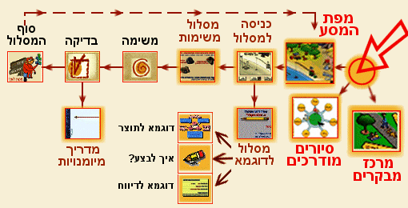

<map name="siur">
<area alt="למסך עבודה: מפת המסע" coords="356,51,420,106" href="Main_ex.htm" target="_top">
<area alt="כיצד מגיעים לשאלה מענינת" coords="295,63,343,105" href="../Chap03/ex_Welc03_l.htm">
<area alt="" coords="293,133,344,177" href="../Chap03/ex_D03_1l.htm">
<area alt="" coords="222,145,266,180" href="../Chap03/D03_12.htm">
<area alt="" coords="222,184,264,212" href="../Chap03/ex_Mad03_4.htm">
<area alt="" coords="221,215,266,251" href="../Chap03/D03_1sic_temp.htm#sicum" target="main">
<area alt="" coords="363,118,423,176" href="../Visitor/ex_Minipr_m.htm">
<area alt="מרכז מבקרים" coords="437,134,504,194" href="../Visitor/ex_Visitor.htm">
<area alt="" coords="222,62,273,106" href="../Chap03/ex_Shl03_l.htm">
<area alt="" coords="152,64,198,103" href="../Chap03/ex_Shl03_1.htm">
<area alt="" coords="81,63,125,103" href="../Chap03/ex_Shl03_1.htm#test">
<area alt="סוף המסלול" coords="8,62,54,103" href="../Chap03/ex_Shl03_4.htm">
<area alt="" coords="79,133,131,178" href="../Chap03/ex_Mad03_4.htm">
</map>
<!doctype html public "-//ietf//dtd html//en//3.0">
<html>
<head>
<title>סיור מהיר</title>
</head>
<META HTTP-EQUIV="Content-Type" CONTENT="text/html; charset=iso-8859-8">
<body link="Purple" bgcolor="#AFEDE0">
<div align="right">
 
<table align="center"><tr align="right">
<td nowrap><font  size="+2" color="#800080"><b><center>?ךלמה ךרדב שי המ</b></font><br><br>

<font  size="+1" color="#800080"><b>ריהמ רויס</b></font></center><br>
<div align="center">Back לע וצחל הרזחל .המגדהה יכסמב תופצל ידכ ,םישרתה יביכרממ דחא לכ לע וצחל<br>
</div>

</td></tr></table>
<br>

<DIV align="right">

<hr>
<br><br>
</div></body></html>
